Applications¶
Image classification¶
In order to train a network for image classification purposes, one must use an image data loader, whose configuration would look something like this:
"data": {
"input_type": "images",
"target_type": "labels",
"input_path": "/path/to/training_data/",
"test_input_path": "/path/to/evaluation_data/",
"batch_size": 128,
"test_batch_size": 200,
"preload": true,
"input_grayscale": false,
"target_grayscale": true,
"transforms": [
{ "resize": [28, 28] }
]
}
The parameters input_grayscale and target_grayscale are specific to the image data loader, and
control whether input and target images should be converted to single-channel grayscale (default is false).
If the same behavior is desired for both inputs and targets,
the single parameter grayscale can be used instead for simplicity.
Specifying target_type: labels triggers the generation of class labels based on directory names.
This requires each image file to be inside a directory whose name uniquely identifies that image’s class.
(If that is not convenient, one can instead use the parameters training_tag/testing_tag to indicate a directory
anywhere in the path underneath which the class name can be found.)
The labels data loader generates targets which are 1D tensors containing a class index (label) in the
range 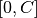 for each input image in the mini-batch, where is the number of classes. This requires
the loss function to be like the NLL, which expects a target with such shape.
Image segmentation¶
Image segmentation works similarly to classification, except that a target image (mask) must be provided instead of
a label for each training example. While the label is a number that is deduced automatically from the input images’
directory names, the target images have to be provided explicitly by means of the target_path
and test_target_path parameters of the data loader. These specify the directories where the training and evaluation
target images (masks) are located, respectively.
Also, since the input and target types are the same in this case (i.e., images), one can simply specify type: images,
instead of passing both input_type and target_type.
The remaining parameters in the data section are the same as for image classification:
"data": {
"type": "images",
"input_path": "/path/to/training_images/",
"target_path": "/path/to/training_masks/",
"test_input_path": "/path/to/evaluation_images/",
"test_target_path": "/path/to/evaluation_masks/"
...
}
The target images must be of the same size and depth as the output of the network, and a loss function that expects its input and target to be of the same shape (e.g., MSE, BCE, etc) must be used.
PDE solvers¶
These applications can solve partial differential equations by using the PDE function itself, as well as boundary and initial conditions, as constraints that are enforced by the loss function. It currently supports:
- the 1+1D Burgers’ equation (one spatial dimension plus time) with boundary conditions 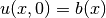 and 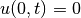
- the 2D stochastic Poisson equation with boundary conditions 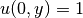,
 and
and  on other boundaries
on other boundaries - the 3D stochastic Poisson equation with boundary conditions
 ,
,  and on other boundaries
and on other boundaries
Burgers’ PDE solver
The Burgers’ equation in one spatial dimension can be written as
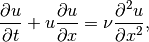
where  is the diffusion coefficient. When 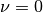, the Burgers’ equation is said to be inviscid.
is the diffusion coefficient. When 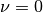, the Burgers’ equation is said to be inviscid.
The training examples for the network are sets of boundary condition functions 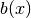 with the form
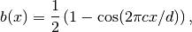
as well as linear supperpositions of these raised-cosine functions,
where  is the domain size in the x-dimension, and the frequency
is the domain size in the x-dimension, and the frequency  is sampled from the
interval 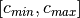 using one of the supported distributions (see
is sampled from the
interval 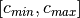 using one of the supported distributions (see bc_type parameter below).
The data loader in this case is, therefore, a PDE boundary condition generator, which accepts the following configuration:
"data": {
"type": "pde",
"domain_size": 128,
"num_examples": 64,
"batch_size": 16,
"num_test_examples": 8,
"test_batch_size": 4,
"bc_frequency": [3, 6],
"bc_type": "random_uniform"
}
The following parameters can be set:
domain_size (required): The size of the domain in
 (the number of time steps is determined by the network).
(the number of time steps is determined by the network).num_examples: The total number of training examples (i.e., initial conditions). If omitted, the training step is skipped.
batch_size: The number of examples per mini-batch during training (defaults to 64).
num_test_examples: The total number of evaluation examples. If omitted, the evaluation step is skipped.
test_batch_size: The number of examples per mini-batch during evaluation (defaults to 64).
bc_frequency: A range
![\mathcal{R} = [c_{min}, c_{max}]](_images/math/73047dee1f1c22af997061df225c786b174fd5ff.png) for the initial condition frequencies .
for the initial condition frequencies .bc_type: The method for how to sample the frequencies from 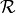. Can have the following values:
random_uniform: Selects
randomly from
with a uniform probability distribution  .
.fixed_uniform: Selects
sequentialy from evenly spaced points in , i.e.,
where
![i \in [0, \textrm{num-examples} - 1]](_images/math/2ce06425ced8128644dde6a56483170c03460a35.png) .
.
The loss function configuration depends on the specific equation being solved.
For Burgers’ PDE, one must set the parameter function as Burgers_PDE,
and the following additional parameters are supported:
"loss": {
"function": "Burgers_PDE",
"diffusion_coeff": 0.01,
"boundary_factor": 64
}
- diffusion_coeff: The value of (defaults to zero, i.e., inviscid Burgers)
- boundary_factor: A multiplier for the boundary + initial condition terms relative to the PDE term. Experiments have shown that a value of 64 works well (defaults to 1).
2D/3D Poisson PDE solver
The Poisson equation is defined as
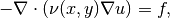
where  is the diffusivity function. The forcing function
is the diffusivity function. The forcing function  is assumed to be zero.
The loss function must be set to
is assumed to be zero.
The loss function must be set to Poisson2D_PDE or Poisson3D_PDE:
"loss": {
"function": "Poisson2D_PDE"
}
To run rmldnn with any of the PDE solver loss functions, add the parameter --app=pde to the command line:
rmldnn --app=pde --config=<json_config_file>